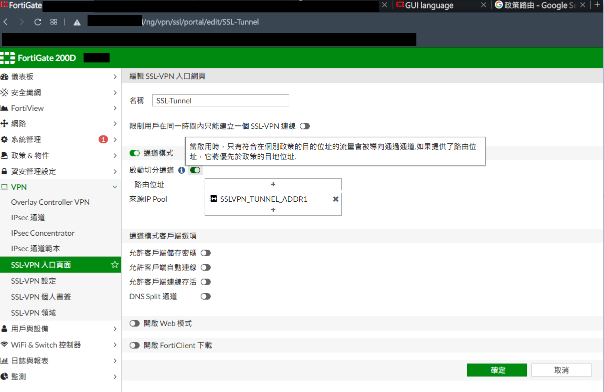

Forti Client SSL-VPN 運作機制原理
Contents
到職以來一直有一個很大的困惑:大家上班都撥 VPN 到 CVT，CVT 流量不會爆炸嗎?
之後又得知 CVT 只拉了一條 30M 的線路… 那豈不是 10 個人同時撥放 Youtube 影片頻寬就被吃滿了 OAO
剛好這次要將 DC2 的 vCenter 做升級，需要上傳 .iso。以往都撥 Fortinet 提供的 SSL-VPN 到 CVT
整個封包轉送的過程 21208 Office > = SSL VPN = > CVT > == IPsec VPN == > DC2
網路速度瓶頸就會受限於 CVT 的 30M 線路，於是跟網路組拿了一組直通 DC2 的 VPN 連線資訊
在問題查找的過程中順便解答到職以來的困惑
一直以來都把 VPN (正確來說應該是 Tunneling Protocol) 視為 OSI 模組底層協議，例如: L2TP/IPsec
啟用後， host 上的所有的流量都會進入隧道並且從隧道的另一端，也就是 VPN Server 所在的地方出來
會有這種錯覺不外乎日常使用的 VPN 都是這種模式 (Full tunneling)，舉幾個例子:
- ADGuard License 在俄羅斯地區用盧比買便宜許多。 BTW，後來放棄 ADGuard 轉用 Open Source 的 Blokada
- Google Play , Netflix , AppleID 突破地區限制存取服務，當連上 VPN 後整隻手機的網路變得極慢。使用
myip.com.tw查看 Public IP 也會是 VPN 選擇的那個國家
直到這次發現原來 Tunneling 隧道有分為 (1) Full Tunneling (2) Split Tunneling
Full Tunneling
如上網路拓譜圖，VPN server 接管所有來自 user side 的流量。當 VPN server 收到不是屬於自己 Network 的封包時會將封包丟到 Default Gateway (通常都是 ISP) 進入 Internet (註:也可能 VPN Server 上有設定政策路由丟棄該封包)
優點:
- 能夠保護 user device 上所有的流量安全。市面上宣稱能夠保護資料安全的 VPN 都是 Full Tunneling。例如使用者連入咖啡廳提供的 Wi-Fi 辦公
如果流量又未經加密很容易讓在區網的其他使用者攔截封包，竊取封包當中的明文帳號密碼。但即使封包有加密 (例:HTTPS) 有心人士也能得知該使用者去了哪些網站 (IP Address)
缺點:
- 裝置上的所有流量都經過隧道，server side 面對網路頻寬吃緊的情況
Split Tunneling
網路拓譜圖可以看到 user side 不再只有 VPN Tunnel 可以走，多了一條原本的路可以選擇。
這就是 Split Tunneling 在 Fortinet 中文翻譯是 「切分通道」
Server side 不再接收所有來自使用者裝置的流量，限制隧道只能通過 VPN Server 設定的 Destination IP
優點:
- VPN Server 網路負荷小，使用者也不會因為連上 VPN 後造成其他服務連線速度龜速
實際結果
在 Windows 環境中執行 route print 可以看到多了一個 95 段的路由
經由這張虛擬網卡出去

▲ Fortinet 上的設定
參考資料
Author 老柯
LastMod 2022-07-06 (3092023)